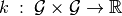
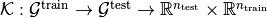
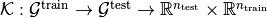
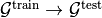

A longer Introduction¶
What is the GraphKernel class¶
GraphKernel is a class decorator, which means that it takes a collection of classes, in our case Graph-Kernels and creates a uniform interface for all them, while providing the user with a way of adding various features.
These features can be listed as follows:
kernel: The kernel can be either abase_kernelor a list ofgeneral_kernelsthat end in abase_kernel.base_kernel:To initialize a
base_kernelkernel the procedure is simple. Anybase_kernelis a dictionary containing its name under the'name'field and its parameterization on separate fields that signify kernel parameters and their values. Theshortest_pathkernel we show on the introduction is such a kernel.Note
The decorator sometimes wraps two kernels in one (as in the
multiscale_laplacianandmultiscale_laplacian_fast) and in order to learn the meaning of each parameter the user is suggested to read the documentation found on Kernels (between graphs).
general_kernels:This type of kernels takes as a
base_kernelanother kernel object. This kernel is also a dictionary containing its name under the'name'field and its parameterization on separate fields that signify kernel parameters and their values. The kernel produced from all the rest kernels in the list is considered as abase_kerneland its parametrization, can be applied on the list consecutive elements. Theweisfeiler_lehmanwe show on the introduction is such a kernel.
If no parameters are given at parametrization, default values are assigned.
normalize: Any kernel has the ability to provide a normalized output. This is important because otherwise the user should calculate the whole kernel matrix at thefit_transformstage in order to make a valid normalize representation of the kernel matrix. Code example:Say we have a
G_train,G_test. This>>> gk = GraphKernel(kernel=[{"name": "weisfeiler_lehman", "niter": 5}, {"name": "subtree_wl"}], normalize=True) >>> # Calculate the kernel matrix. >>> K_train = gk.fit_transform(G_train) >>> K_test = gk.transform(G_test)
should be equivalent as process (set aside a non-deterministic kernel or split), with this
>>> gk = GraphKernel(kernel=[{"name": "weisfeiler_lehman", "niter": 5}, {"name": "subtree_wl"}], normalize=False) >>> # Calculate the kernel matrix. >>> K = gk.fit_transform(G) >>> K_diag = K.diagonal() >>> K_train_diag, K_test_diag = K_diag[train_diag], K_diag[test_diag] >>> K_train = K[train_indices, :][:, train_indices] / np.sqrt(np.outer(K_train_diag, K_train_diag)) >>> K_test = K[test_indices, :][:, train_indices] / np.sqrt(np.outer(K_test_diag, K_train_diag))
but in the second case we make some more computations, in reward that fit samples are drown from both train and test datasets, producing a different result in some kernels by unifying as a intuitively train and test data when drawing samples and may be desired (e.g. on the
multiscale_laplacian_fast).
Nystroem: Nystroem is very well known method, for approximating kernel matrices on huge datasets.The kernel matrix is calculated only in random drown subsets of graphs, whose size can be defined by the user by setting an int value inside the
Nystroemparameter. After that, all the kernel values are calculated in the sample space. An example indicating the power of nystroem can be indicated below:Example: We will perform a simple classification task.Download the dataset and split to train and test
>>> from grakel import datasets >>> MUTAG = datasets.fetch_dataset("MUTAG", verbose=False) >>> MUTAG_data, y = MUTAG.data, MUTAG.target >>> split_point = int(len(MUTAG_data) * 0.9) >>> X, Y = MUTAG_data[:split_point], MUTAG_data[split_point:]
Initialise a
GraphKernel, usingNystroemof 20 samples>>> from grakel import GraphKernel >>> wl_kernel = GraphKernel(kernel = [{"name": "weisfeiler_lehman", "niter": 5}, {"name": "subtree_wl"}], Nystroem=20) >>> K_train = wl_kernel.fit_transform(X) >>> K_test = wl_kernel.transform(Y) >>> print(K_train.shape) (169, 10) >>> print(K_test.shape) (19, 10)
Classify using a standard SVC
>>> y_train, y_test = y[:split_point], y[split_point:] >>> from sklearn import svm >>> clf = svm.SVC() >>> clf.fit(K_train, y_train) SVC(C=1.0, cache_size=200, class_weight=None, coef0=0.0, decision_function_shape='ovr', degree=3, gamma='auto', kernel='rbf', max_iter=-1, probability=False, random_state=None, shrinking=True, tol=0.001, verbose=False) >>> y_pred = clf.predict(K_test)
finnaly calculate accuracy score
>>> from sklearn.metrics import accuracy_score >>> print(str(round(accuracy_score(y_test, y_pred)*100, 2)), "%") 78.95 %
Note
As we see the accuracy of the classification is the same, allthough instead of doing~ 169 * (169-1) /2 + 19 * 169 = 17,407 computations we did~ 20 * (20-1)/ 2 + 20 * 169 + 20* 19 = 3,950 computations.
n_jobs: Some kernels have operations that can be executed concurrently, making computation fasterwhen user uses a significant amount of data, to overcome the parallelization overhead.
n_jobsfollows the same formulation as in sklearn where giving as input 0 or -1n_jobssignifies initializing all the possible workers and if given a positive number, initializes that amount of workers if possible.Warning
This feature is currently not implemented correctly and we would advise the user not to use.
For helping us solve such a problem see Contributing.
random_seed: We would in generally want to satisfy the need of the user to providea
random_seedeither to kernels that are probabilistic, or to randomize accordingly procedures of theGraphKernelthat need randomization such asNystroem, where the decorator draws probabilistically a number of components from the number of fitted samples.Let’s give an example of a probabilistic kernel using our old water example. We will use a very well known kernel called Graphlet-Sampling, where we will sample probabilistically 5 subgraph samples from each graph either
 or
or  .
.After initializing the input
>>> from grakel import GraphKernel >>> H2O = [[[[0, 1, 1], [1, 0, 0], [1, 0, 0]], {0: 'O', 1: 'H', 2: 'H'}]] >>> H3O = [[[[0, 1, 1, 1], [1, 0, 0, 0], [1, 0, 0, 0], [1, 0, 0, 0]], {0: 'O', 1: 'H', 2: 'H', 3:'H'}]]
let’s calculate a default kernel value
>>> gs_kernel = GraphKernel(kernel=dict(name="graphlet_sampling", n_samples=5)) >>> gs_kernel.fit(H2O) >>> gs_kernel.transform(H3O) 20.0
Note that if a random seed is not given as an argument either to the
GraphKernelor to the kernel parameters a default will be used. Now let’s try to give one as a parameter of the kernel (say 3)gs_kernel = GraphKernel(kernel=dict(name="graphlet_sampling", n_samples=5, random_seed=3)) gs_kernel.fit(H2O) gs_kernel.transform(H3O) 10.0
As we see a new value has been calculated because the default seed is now not used. If know a
random_seedis initialized inside the decorator and no parameter is given signifying arandom_seedto thekernelargument then if the kernel has such parameter the default will be used. This is demonstrated in what followsgs_kernel = GraphKernel(kernel=dict(name="graphlet_sampling", n_samples=5), random_seed=3) gs_kernel.fit(H2O) gs_kernel.transform(H3O) 10.0
where we get the same result. Now if both a
GraphKernelhas arandom_seedand thekernelis provided with one inside parametrization, the second will be used inside thekerneland the first outside, in the rest code area covered by the decorator, as expected. To demonstrate show is the following:>>> gs_kernel = GraphKernel(kernel=dict(name="graphlet_sampling", n_samples=5, random_seed=3), random_seed=10) >>> gs_kernel.fit(H2O) >>> gs_kernel.transform(H3O) 10.0
where
>>> gs_kernel = GraphKernel(kernel=dict(name="graphlet_sampling", n_samples=5, random_seed=10)) >>> gs_kernel.fit(H2O) >>> gs_kernel.transform(H3O) 15.0
verbose:Note
Verbose is an argument that is currently unsupported (has no impact), but is set for future implementation of some output messages.
To understand what the GraphKernel object is doing, we must see inherently what objects it decorates.
The kernel class¶
This Object is any object inherited from the kernel (class) class (which can be imported from grakel).
Normally a kernel function, between graphs should be considered as a function with to arguments,
such as .
This raises two issues, namely one of efficiency and one of compatibility:
1. The first one has to do with the fact, that there are major computational advantages if instead of calculating the kernel pairwise, we calculate the whole kernel matrix.
2. The second has to do with the fact, that we wanted our project to be integratable inside the sk learn template. From this template the most relevant structure was the sci-kit transformer, which consists of three inherent methods: fit, fit-transform, transform.
So the way we conceptually attached the kernel definition to that design pattern was
+ The fit part should fix a graph dataset as the base of comparison calculating necessary features.
+ The fit_transform should fit and calculate the fitted dataset with itself.
+ The transform should calculate the matrix produced by between a new dataset (namely the test) and the dataset fitted in fit.
The deconstruction of the kernel matrix calculation from a function  to a currying scheme  is not always equivalent in the
result, if some of the data of
to a currying scheme  is not always equivalent in the
result, if some of the data of  , must be combined with data of
, must be combined with data of  to produce the fit reference-features. In such cases
as mentioned above, namely in the case of
to produce the fit reference-features. In such cases
as mentioned above, namely in the case of multiscale_laplacian, if the user wants  to be concerned
before fit we advise him to use the fit_transform, function in the whole of the train and test data and separate the kernel matrices on the result.
Using a kernel type object through the decorator, should be equivalent with doing so from the decorator, if the correct parametrization is given.
The decorator does not restrict any user-oriented interface of the kernels except if the user wants to write a kernel of his own.
If you want to know more about the kernel structure in order to write your own see Write your own kernel.
To demonstrate a small example of the above we will construct our own a WL-subtree kernel instead of using the decorator.
To do so first import the weisfeiler_lehman and subtree_wl kernels as
>>> from grakel import weisfeiler_lehman
>>> from grakel import subtree_wl
If we see the documentation of Weisfeiler Lehman Kernel, we can see that it accepts two arguments upon initialization: a niter and a base_kernel. The base_kernel is a tuple consisting of a kernel type object and a dictionary of arguments. To initialize a Weisfeiler-Lehman with 5 iterations and a subtree base-kernel.
>>> wl_kernel = weisfeiler_lehman(niter=5, base_kernel=(subtree_wl, {}))
This is also equivalent with doing (as long as we have no arguments)
>>> wl_kernel = weisfeiler_lehman(niter=5, base_kernel=subtree_wl)
Now let’s go back again to our favorite MUTAG problem.
>>> from grakel import datasets
>>> MUTAG = datasets.fetch_dataset("MUTAG", verbose=False)
>>> MUTAG_data, y = MUTAG.data, MUTAG.target
>>> split_point = int(len(MUTAG_data) * 0.9)
>>> X, Y = MUTAG_data[:split_point], MUTAG_data[split_point:]
If what we said till now is correct, the GraphKernel object should produce the same kernel matrix output on the MUTAG train/test data split.
>>> from grakel import GraphKernel
>>> wl_graph_kernel = GraphKernel(kernel = [{"name": "weisfeiler_lehman", "niter": 5}, {"name": "subtree_wl"}])
>>> from numpy import array_equal
>>> array_equal(wl_graph_kernel.fit_transform(X), wl_kernel.fit_transform(X))
True
>>> array_equal(wl_graph_kernel.transform(Y), wl_kernel.transform(Y))
True
Why not a more structured input for Graphs?¶
The flattened input type provided for all kernels (graph-dictionary/adjacency, node-labels, edge-labels) may raise the question, why does not this library, accept a well known type of Graph input as the one constructed from networkx or igraph. Networkx library is known for producing a very big memory overhead, which seems unimportant when the user wants to use very basic graph methods such calculating shortest paths or getting a vertex neighbor. Because what we wanted to wrap around a graph class was really simple: conversion between dictionary and adjacency formats, format agnostic - format imposing methods and very basic graph oriented supplementary methods, such as Shortest-Path matrix calculation, we designed a Graph class of our own, used inside most of our kernels, in order to resolve to a common object - graph format reference. This specificity of kernel format, as well as the absence of a need for complex calculations concerning the field of graphs lead us to the creation of Graph (class).
Let’s go back to the H2O example:
First we will import the Graph object from Grakel
>>> from grakel import Graph
Firstly let’s collect all the dictionary formats and show that they are equivalent. We start by calculating a graph object for the native format of graph dictionary which corresponds to the following:
>>> H2Od = dict()
>>> H2Od[0] = {'a': {'b': 1., 'c': 1.}, 'b': {'a': 1}, 'c': {'a': 1}}
Now let’s initialize all the other
>>> H2Od[1] = {'a': ['b', 'c'], 'b': ['a'], 'c':['b']}
>>> H2Od[2] = {('a', 'b'): 1., ('a', 'c'): 1., ('c', 'a'): 1., ('b', 'a'): 1.}
>>> H2Od[3] = [('a', 'b'), ('a', 'c'), ('b', 'a'), ('c', 'a')]
>>> H2Od[4] = [('a', 'b', 1.), ('a', 'c', 1.), ('b', 'a', 1.), ('c', 'a', 1.)]
and compute the result
>>> any(Graph(H2Od[i]).get_edge_dictionary() == H2Od[0] for i in range(1, 5))
True
Now let’s do the same for adjacency matrix type formats. The numpy array is the native adjacency-matrix format:
>>> from numpy import array
>>> H2O = dict()
>>> H2O[0] = array([[0, 1, 1], [1, 0, 0], [1, 0, 0]])
and with the conversion of other input type formats
>>> H2O[1] = [[0, 1, 1], [1, 0, 0], [1, 0, 0]]
>>> from scipy.sparse import csr_matrix
>>> H2O[2] = csr_matrix(([1, 1, 1, 1], ([0, 0, 1, 2], [1, 2, 0, 0])), shape=(3, 3))
we can demonstrate equality as
>>> from numpy import array_equal
>>> all(array_equal(Graph(H2O[i]).get_adjacency_matrix(), H2O[0]) for i in range(1, 3))
True
Now we would like to initialize two Graph type objects one for adjacency_matrix and one for edge_dictionary and show that they are equivalent (using also labels).
First initialize the graph object, created from an adjacency matrix:
>>> H2O_labels = {0: 'O', 1: 'H', 2: 'H'}
>>> H2O_edge_labels = {(0, 1): 'pcb', (1, 0): 'pcb', (0, 2): 'pcb', (2, 0): 'pcb'}
>>> adj_graph = Graph(H2O[0], H2O_labels, H2O_edge_labels, "all")
and one from an edge dictionary:
>>> H2Od_labels = {'a': 'O', 'b': 'H', 'c': 'H'}
>>> H2Od_edge_labels = {('a', 'b'): 'pcb', ('b', 'a'): 'pcb', ('a', 'c'): 'pcb', ('c', 'a'): 'pcb'}
>>> edge_dict_graph = Graph(H2Od[0], H2Od_labels, H2Od_edge_labels, "all")
Firstly we will demonstrate equality of graph type formats:
>>> array_equal(adj_graph.get_adjacency_matrix(), edge_dict_graph.get_adjacency_matrix())
True
and
>>> adj_graph.get_edge_dictionary() == edge_dict_graph.get_edge_dictionary()
True
and afterwards between labels for "adjacency" object formats, defined by the purpose argument of the get_labels method from the Graph type object and for both vertices or edges defined by the label_type format of the same method, as
>>> all((adj_graph.get_labels(purpose="adjacency", label_type=lt), edge_dict_graph.get_labels(purpose="adjacency", label_type=lt)) for lt in ["vertex", "edge"])
True
Checking equality of the inverse (“edge_dictionary”) want hold, because the adjacency matrix, when initialized does not have information about the vertex symbols. Here we should emphasize that vertex symbols should be a :code:`sortable` in order for an indexing to be possible.
Note
When initializing a Graph object the 4th argument (named graph_format), corresponds to the format the Graph will be stored to. The default value of this argument is "auto", which stores the graph in the given format, if it is valid. Explicit format “choices” such as "adjacency" or "dictionary", will (covert if needed and) store the Graph in this format type. By initializing the Graph format as all in the above example, we simply make sure that the Graph instance will contain both adjacency and dictionary graph representations and their corresponding edge and adjacency labels for both nodes and edges. Although the methods get_adjacency_matrix and get_edge_dictionary, construct and return a such a graph representation, if non existent, and return it, the get_labels method will change the graph format if the requested labels are not in the desired format and pop a certain warning. If the user wants to avoid doing so he can either set the explicit format afterwards by executing
>>> adj_graph = Graph(H2O[0], H2O_labels, H2O_edge_labels)
>>> adj_graph.set_format("all")
or declare which is the desired format format he wants the graph to support and it will be included automatically by executing
>>> adj_graph.desired_format("dictionary")
which in that case will set the Graph instance format from "adjacency" to "all", in order to include the specified format.
After this long introduction of what the Graph Object is, the way this can interest the user is by utilizing as input for GraphKernel.
Because this Object will act as a mutable-object, any necessary format conversion inside a dataset will happen only ones and the user can execute
multiple kernels on a single dataset with repeating conversions again and again. An important thing to mention here is that a kernel Object should
not cause information loss concerning a the Graph data Object give as input.
Now let’s demonstrate the simple water example on a Shortest-Path kernel, using Graph type objects.
First initialize those objects:
>>> H2O = Graph([[0, 1, 1], [1, 0, 0], [1, 0, 0]], {0: 'O', 1: 'H', 2: 'H'})
>>> H3O = Graph([[0, 1, 1, 1], [1, 0, 0, 0], [1, 0, 0, 0], [1, 0, 0, 0]], {0: 'O', 1: 'H', 2: 'H', 3:'H'})
And calculate fit transform
>>> from grakel import GraphKernel
>>> sp_kernel = GraphKernel(kernel = {"name": "shortest_path"}, normalize=True)
>>> sp_kernel.fit_transform([H2O])
1.0
and finally the normalized kernel value, between and
>>> sp_kernel.transform([H3O])
0.9428090415820634
which is equivalent with the originally computation, we did on introduction.